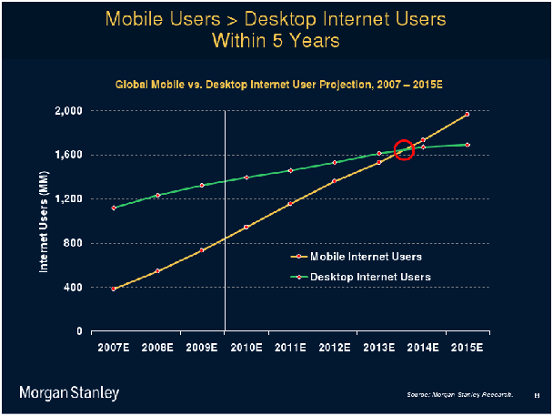
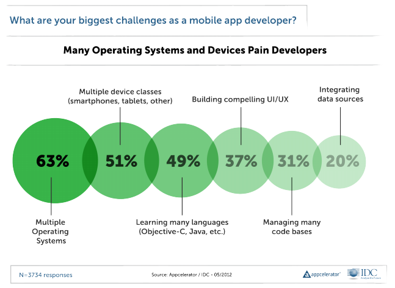
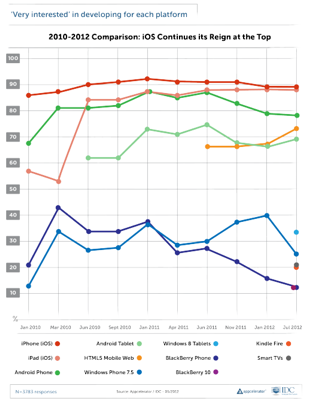
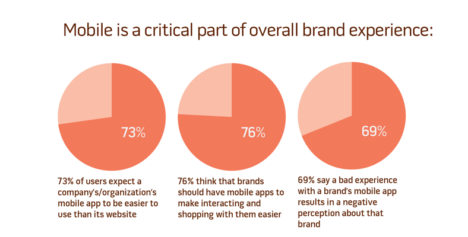
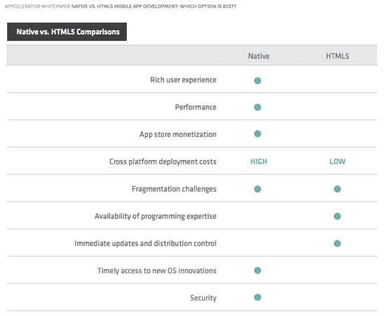
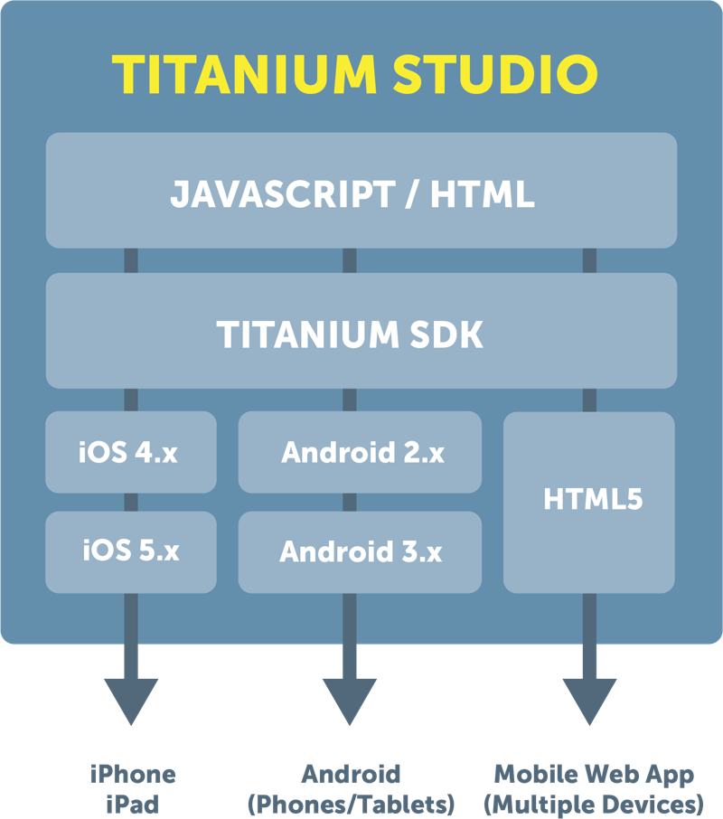
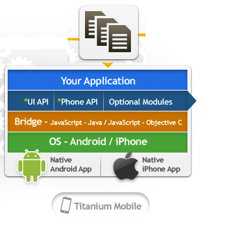
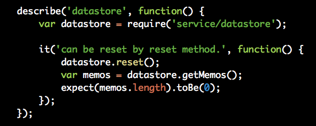
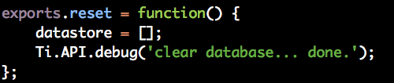

Titanium Mobile Development 101
Andrew McElroy
Andrew McElroy
TCE Level 2
Twitter: Sophrinix
Coder Faire 2012 - Titanium Mobile Development 101 Github.com/sophrinix/coderfaire12
Mobile is Massive
Mobile is Diverse
and changing rapidly
There is an expectation for good UX
source:http://www.uxbooth.com/blog/12207/
Native vs Web have different strengths
Why not stay agnostic and leverage both?
Enter Titanium
Open Source
Apache 2 License
Github.com/appcelerator/titanium_mobileGetting Started is easy
Appcelerator.com
grab the sdk and get coding
You'll need the android sdk and a mac for iOS
Get real native development AND (emerging) mobile web
from the same code base
It's NOT "write once run anywhere"
Remember Java Applets
and how terrible they were
Every platform has it's quarks and idioms
More Like:
write once & adapt every where
Platforms Supported
iPhone iPad Android android tables html5 mobile web faded blackberry
Blackberry didn't pan out
But stay tuned...
Appcelerator's official response:
"We are not really going to support older Blackberry platform and we are not encouraging our developers to use existing beta so it is advisable not to target it for the class. We are working on a new Blackberry platform that targets Blackberry 10 (BBX) that would be out in few months ..."
Leaked footage of Appcelerator's Blackberry SDK team*
* not really, but it's a good simulation on the annoyance of native Blackberry legacy development
Some example apps
How does it work?
a naive look
A deeper look
Let's look at the API
Docs.appcelerator.com is your best friend
Let's write some code
I'll just add this one feature...
Here is how you would test drive it
A (trivial) TDD loop
Example spec
implementation
on reporters
see: https://github.com/sgrimault/jasmine-titanium-reporters
- ConsoleReporter – Report test results using Titanium API logging.
- JUnitXmlReporter - Report test results to a file (using Rhino or PyPhantomJS) in JUnit XML Report format.
This isn't a talk on TDD
How does all this work?
A look at the stack
Prove it's native Code
CommonJS and Best Practices
Lets write a (trivial) objc module for titanium
demo for this
tdd it with cedar. i'll leave this as an exercise to the reader
https://github.com/pivotal/cedar
QuickTiGame2d
3rd party module to write 2d games
Thanks

Titanium Mobile Development by Andrew McElroy is licensed under a Creative Commons Attribution-NonCommercial-ShareAlike 3.0 Unported License.
This presentation uses RevealJS.
The "leaked video" is owned by istockphoto and is not included in the repository